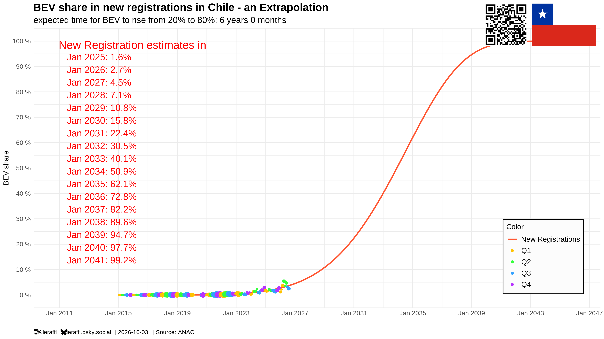
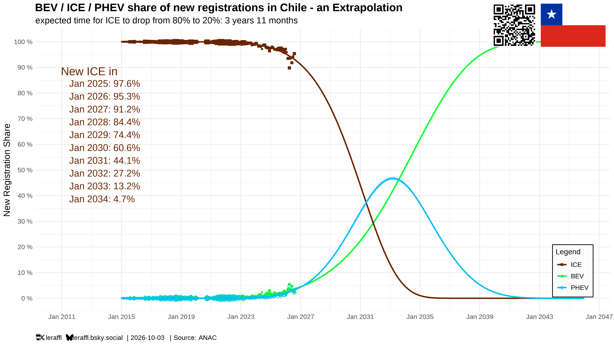
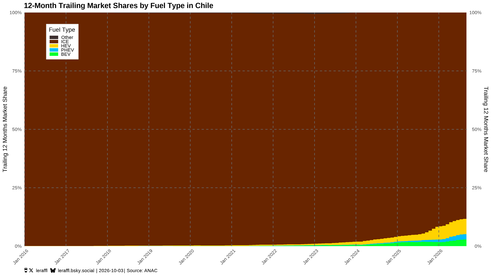

Chile 0 of 4 charts differ
| Base | PR | |
|---|---|---|
| v1 | -3.867903487222e-9 | -3.867903487222e-9 |
| v2 | 6.35217695399305 | 6.35217695399305 |
| t0 | 2014 | 2014 |
| refit_swing | 5.82 | 5.82 |
| ttm_bev_share | 0.028419367974469 | 0.028419367974469 |
| data_per | 2026-08 | 2026-08 |
| 80 % year, bands/ | — | — |
| 10 % year | 2028.8 | 2028.8 |
| 50 % year | 2033.9 | 2033.9 |
| 80 % year | 2036.7 | 2036.7 |
Base

PR

Base

PR

Base

Base

PR